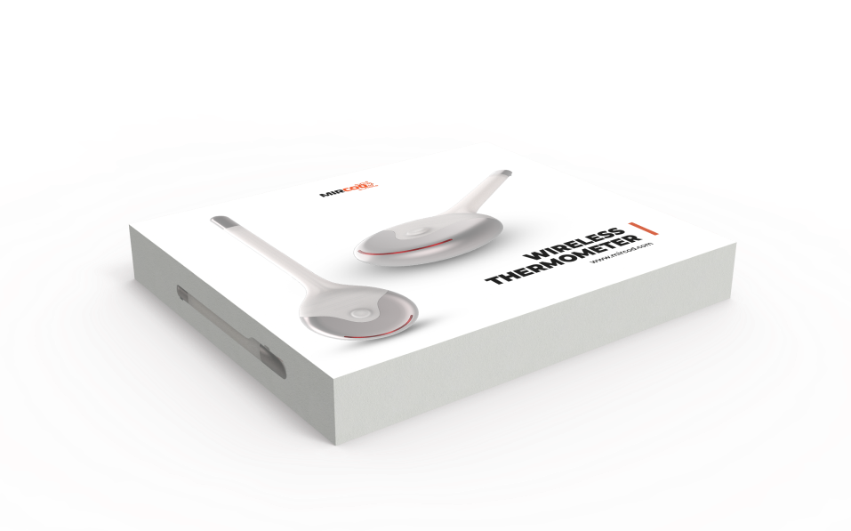
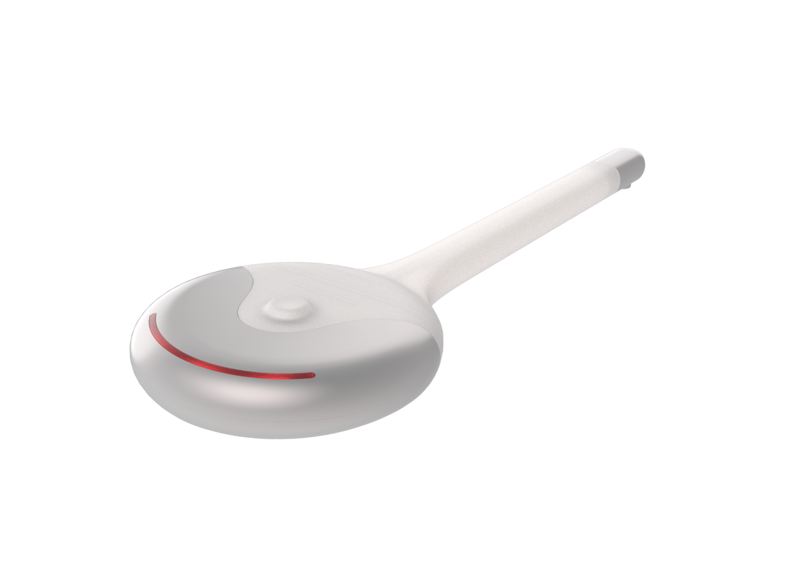

Thermopatch
контроль температуры 24/7
с эталонной точностью
Измерение температуры тела с медицинской точностью и отслеживание в реальном времени на протяжении нескольких дней — нетривиальная задача, особенно на крупных производствах в условиях пандемии или в больницах с перегруженным медперсоналом. А , отследить и проанализировать показатели у тысячи сотрудников без участия дополнительного медицинского персонала, при этом исключив человеческую ошибку в фиксации данных — практически невозможно. Помимо анализа данных у тысяч сотрудников, длительный контроль температуры в реальном времени критичен для младенцев, больных диабетом и/или онкологических больных, пожилых людей и пациентов с подозрением на наличие различного вида инфекций.
Отправить заявкуВысокоточный датчик для измерений
Гипоаллергенный и пластичный материал, незаметный под одеждой
Мобильное приложение с календарём
Система уведомлений при критических показателях
Высокоточный датчик с погрешностью до 0,01 градуса
Сменный источник питания для многоразового использования
Одноразовые, стерильные клеящиеся основы для безопасного использования
Датчик положения тела в пространстве для обнаружения падения
* Время работы от одного заряда до 240 часов
8
mm
Удалённый обмен данными при подключении к Интернету и хранение всей информации в Облаке
Наличие календаря для отслеживания динамики изменения Т-тела
Уведомления с помощью SMS, E-Mail или Push сообщений
* Передача данных в мобильное приложение на растоянии до 12 метров
Единовременный контроль за большим количеством людей - приоритетная задача для больниц и предприятий в условиях пандемии. Для решения этой задачи MIRCOD разработал единую платформу для мгновенного анализа и регистрации температуры в режиме реального времени. Система моментально визуализирует любые тревожные изменения в зависимости от выставленных критериев администратором системы. Весь процесс полностью автоматизирован, что существенно уменьшает затраты на медицинский персонал, обычно требуемый для решения подобных задач. Платформа имеет возможность выделить проблему и сообщить о ней 24/7. Это позволяет принимать решения в режиме реального времени, что критически важно для безопасности сотрудников и пациентов.
В условиях пандемии критически важно получать своевременные сигналы о здоровье каждого сотрудника на предприятии. Разовые замеры утром и вечером не дают получить полную картину о состоянии персонала. Вместе с тем, данный процесс требует привлечения сразу нескольких медицинских работников, что подразумевает наличие человеческого фактора и зачастую приводит к ошибкам. Термометры TEMPCOD решают все обозначенные проблемы, позволяя контролировать температуру и положение тела в пространстве у всех сотрудников. При резком изменении температуры или достижении тревожных границ, система мгновенно оповещает ответственных лиц с выделением конкретного сотрудника, тем самым предоставляя возможность быстро принять меры и не допустить распространения эпидемии.
При создании пластыря использовались сертифицированные, гиппоалергенные медицинские материалы компании 3М, совершенно безопасные при соприкосновении с кожей ребенка. Использование термометра в виде наклейки позволяет сохранить конфиденциальность измерений и комфорт на все время ношения пластыря. Больше нет необходимости переживать о состоянии здоровья самых дорогих и любимых людей. Благодаря приложению, установленному на телефоне, вся необходимая информация доступна из любого места и в любое время.
Контроль за температуирой пациента — одна из главных задач при амбулаторном или стационарном лечении. Но периодические замеры в течение дня не дают полноценной клинической картины. Своевременная реакция на серьезные изменения температуры тела позволяет медицинскому персоналу вовремя оказать необходимую помощь. Пластыри TEMPCOD создают возможность единовременной телеметрии всех пациентов медицинского учреждения. Таким образом, всем оказывается должное и своевременное внимание и повышается качество оказываемых услуг, тем самым ускоряя выздоровление.
© “MIRCOD” 2020. All rights reserved